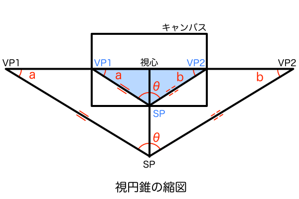
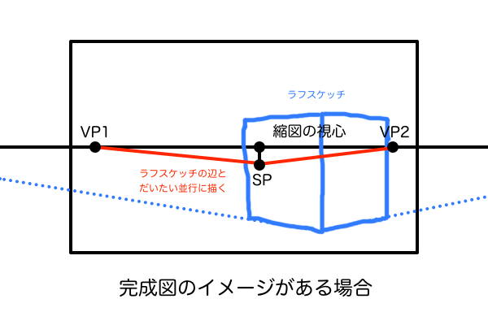
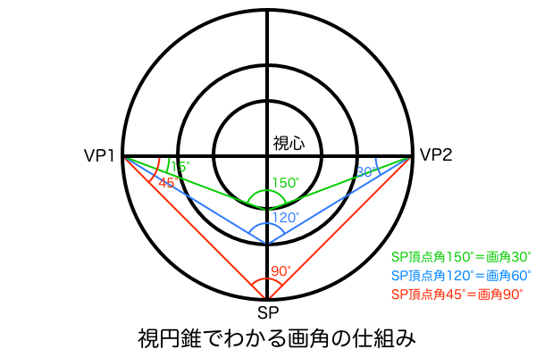
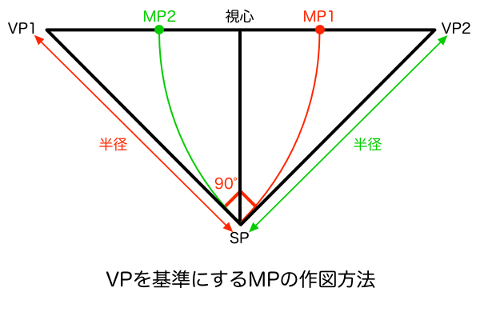

奥行きパースの長さを正確に作図するには建築パースの技法の一つである「M点法」を使う必要があります。しかし、M点法で作図するにはキャンバスのはるか外側にある消失点を基準にした作図方法を行うため、お絵描きに応用するにはちょっと現実的ではない技法です。一枚のイラストをじっくりゆっくり描くのであれば手間をかけて作図することは出来なくもないですが、漫画やアニメーションのための絵を描くならスピードも重要ですし、画面外の消失点を基準にしないで一枚の紙の内側だけで完結できる作業内容であることも重要になってきます。
（※ M点法が分からない方へ。M点法とは、MP（側点）という基準点を求めて奥行きの長さを正確にササっと作図できるマニアックな技法です。このMPを求める作業はキャンバスの外側で行われることが多いのでお絵描きには不向きな技法でした。とりあえず図解を見たいならこちらの建築パースを徹底研究！パース理論の基礎知識と描き方の記事のM点法の説明をどうぞ。）
パース理論が難しいのは全体が見えないから
そこで着目したのは「画面内だけで完結できる作業内容」という点です。パース理論というのは大抵は視円錐という幾何学的な図形をベースに構成されています。そして、幾何学には「相似」という法則によって、同じ形状の図形なら拡大縮小しても角度は同じまま保たれるという、パース作画にとって都合のいい性質があります。この相似の性質を利用してキャンバスの内側に視円錐の縮図を描いて、それを基準に様々なパース作図をお手軽に済ませてしまおうというアイデアを思いつきました。言葉では伝えづらいので図で説明してみましょう。


この視円錐の縮図とは、キャンバス内に絵として描かれている立体の作図の基準となっている消失点やM点がはるかキャンバス外に配置されていて、長い定規で点と点を結んだりしないと正確な作図ができないという煩わしさを解消すべく、相似の法則を利用して丁度キャンバス内に収まるサイズで描き直したものです。そして、その縮図を使って正確なパースを作図したら、今度は再び相似の法則を利用して元のサイズに拡大することで一枚の絵として完成するということです。
視円錐の縮図と画角の関係
では、縮図を描くときの手順と注意点について解説していきます。分かりやすさを優先して2点透視図法から解説します。まず最初に描くのは消失点VP1とVP2です。これらはキャンバス内に収まっていればどこでも構いません。次に、元のサイズの絵における2点透視の消失点に収束する消失線と平行な線を、先ほど描いた縮図の消失点を通るように描きます。このときに絵の完成図のイメージがあるならそれに近い角度で消失線を描けばいいし、イメージはないけど画角だけは決めているというならそうなる角度で消失線を描けばいいです。これだけで視円錐の縮図はほぼ完成です。


ちなみに、任意の画角となる消失線の角度については「三角関数」や「ピタゴラスの定理」で計算して一覧表にまとめておけば、今後パース作画をするときにその数値を参考に分度器で作図できるので作業を短縮できます。なぜ三角関数とピタゴラスの定理で画角が分かるのかというと、画角というものの正体は実はVP1とVP2それぞれの頂点角の合計値なので「三角形 SP-VP1-VP2」について幾何学的に解析するだけで画角を算出できるのです。そして、ここで算出した画角の大きさをまとめた一覧表があれば、完成図のイメージで描いた立方体の消失線の角度を分度器で測れば画角を確定できるし、すでに任意の画角を決めているならその角度になるよう分度器で作図する、というようにさきほど述べたことを分度器一つで実行できるようになるわけです。



全体が見える縮図ならMPは一瞬で見つかる
前置きが長くて忘れてしまいそうですが、必死になって縮図を描いている理由はM点法を実用化するためです。ここで思い出して欲しいのですが（というか過去記事でちょろっと書いただけなので覚えていたらびっくりですが）、M点法においてMP1とMP2を作図する方法は「VP1もしくはVP2を中心としてSPを通る円弧」と「アイレベル」との交点というものがあります。本来ならキャンバスのはるか外側にあるVPやSPを使わないといけないので実用的ではない技法でしたが、今回のように画面内に縮図を描いてしまえば余裕でVPやSPを使ってMPを作図できます。

そしてこの方法で作図したMPの縮図を元のサイズの視円錐に拡大して作図するだけです。これは単純に「元のサイズ：縮図」の比率で寸法を合わせるだけです。これを算出するには、視心とSPの距離を元サイズと縮図のそれぞれを定規で測り、「元サイズの長さ/縮図の長さ」で比率を計算するのが妥当でしょう。たとえ元のサイズのSPがキャンバスの外側にあったとしてもアイレベルからのキョリを測るくらいならそれほど手間にはならないはずです。ちなみに、元のサイズと縮図で対応する同じ部位の寸法であれば比率計算に利用できるので、自分のやりやすい部位を選んでください。

MPの縮図を拡大する先の場所はキャンバス中央
これで縮図が元サイズの何分の1のサイズなのかが分かるので、今度は逆に視心からMPまでの距離をその比率で拡大すればいいのです。しかしここで注意しないといけないのが、拡大図のどの位置にMPを作図すればいいかということです。なぜかというと、M点法は「観察者がSPから風景を見たとき」に立体の奥行きがどれくらいの長さに見えるかを正確に作図する技法だからです。ということは風景を観察している視点が明確に定められているため、間違った場所に拡大してMPを作図すると完成図が歪んでしまうからです。つまり、ここで求めたMPは観察者が立っているSPのみにしか対応していないのです。これについては、以前の2つの視円錐を重ねて三点透視パース作画 〜建築パースとリアルパースの違い〜の記事で提唱した「視界の視円錐」と「空間の視円錐」をちゃんと使い分けて考えないといけません。ここからはかなりややこしい話しになるので気合いを入れて挑んでください。

まず「空間の視円錐」は立方体を作図するためだけのものなので立方体ごとに存在します。一方「視界の視円錐」は最終的に絵となるキャンバス内のレイアウトを決定するものなのでキャンバスの視心に対して一つしか存在しません。さらに忘れないようにすべきことは、MPを拡大するときには、MPの作図に使った「空間の視円錐」の視心を、「視界の視円錐」の視心に一致するようズラして考えることです。これは「視界の視円錐」と「空間の視円錐」の優先順位が関係しています。「視界の視円錐」はキャンバスに対して一つしか存在していないということは、もはや絶対的な優先度をもっているということです。そして、視円錐を使ったパース作図の基準は作図しやすさ故に画角90°なので、視界の視円錐は必ず「90° + 45° + 45°の直角二等辺三角形」になります。視界の視円錐だからといって人間の目の画角をリアルに再現したら中途半端な画角になるので、こういうときはでは便宜上90°でやるものです。さらに、この直角二等辺三角形の視心はキャンバスの視心と一致します。最後に、この直角二等辺三角形の視心に「空間の視円錐」の視心を一致させることで、作図したMPを観測者が立っているSPに対応させることができます。優先順位をまとめると、キャンバスの存在、視界の視円錐の存在、空間の視円錐の存在となります。具体的に言うと、キャンバスの中身の完成図の画角とアイレベルを決めるために「視界の視円錐」が発生し、その視界に立方体を作図するために「空間の視円錐」が発生するということです。
と、このやり方をそのまま実践すると「空間の視円錐」を何度も作図し直さなければならなくなるので、実際に絵を描くときには「空間の視円錐」の位置で作図した「MPだけ」を「視界の視円錐」の視心に一致させればいいと思います。くどいようですが、「空間の視円錐」と「視界の視円錐」の視心を一致させる作業とは、「空間の視円錐」を水平方向にスライドさせるだけです。そして、この作業は本命のMPを求めるためだけに行うもので、求まりさえすれば「空間の視円錐」の位置も元通りの状態に頭の中でリセットしておけばいいと思います。これらを理解して作図しないとどれがどれに対応した線なのかが混乱してしまうので注意です。

観測者が注目している「注視点」の考え方を忘れずに
2つの視円錐の違いを改めて理解するために、まず三点透視図法の縦パース講座（2/3） 〜縦パースの傾きの法則〜の記事で説明した1点透視図法の「注視点」の話を用います。1点透視図法における消失点はキャンバスの中央に設定しないと、立方体が正面を向いているという原則を無視して少し観測者の方向に傾いた立方体を作図してしまう、というものです。これは、消失点をどこに設定しても1点透視の絵は描けるけど、それはあくまで透視図法の幾何学的な理屈によるもので、人間が見ているリアルな絵とはかけ離れたものになるということです。分かりやすく言うと、消失点をどこに設定しても1点透視で描けるのは「空間の視円錐」がそれぞれの立方体ごとに存在していて、それらがその立方体に対する1点透視図法の消失点として機能するからです。ただし、その立方体ごとの消失点がキャンバス中央以外の位置に設定されていた場合、その立体は1点透視図法の原則である「正面を向いている」という前提を無視して、観測者の方向を向いている絵となってしまいます。図で説明すると大体こんな感じです。


今回のMPが観測者のいるSPにしか対応していないのも同じ理由です。「観察者がSPから風景を見たとき」というシチュエーションは一つしか存在しないということです。別の場所にMPを作図してしまうと、観測者もそちらへ移動したということになります。例えば、一つの立方体の周囲を歩き回りながら見れば奥行きの長さがどんどん変化していくということです。観測者から見た風景としての絵を描きたいのなら、1点透視図法の消失点が視界の視円錐の視心と一致していることと同じで、MPを作図する位置は視界の視円錐の視心に一致させるということです。
「視界の視円錐」「空間の視円錐」「MPの作図位置」の違い
ここまででかなりややこしい説明をしてきましたが「視界の視円錐」「空間の視円錐」「MPの作図位置」をそれぞれ明確に分類できればもっとシンプルにまとめることができます。これら3つの要素をそれぞれ単体で分けて考えることができれば、あとはパズルのように組み合わせることで様々なMPを作図して絵を描くことができるようになります。このような視円錐をベースにしたパース理論は、「空間の視円錐」のSP（厳密にはGL）の平面座標（縦・横）の2つで考えれば単純化できます。結局は視界の視円錐の視心に近ければ望遠パース、遠ければ広角パースということに従っておけばいいので、平面座標がどの位置になっているかを基準に「視界の視円錐」「空間の視円錐」「MPの作図位置」を定義してみました。ちなみに図中にある「GL」とは基線のことで、立方体を作図する接地面がキャンバス内のどの高さにあるかを指定するものです。簡単に言えば遠近感にのせたSPみたいなものです。こういった専門用語については建築パースを徹底研究！パース理論の基礎知識と描き方の記事にまとめてあるので目を通しておいてください。


立方体ごとにMPが存在する原理の理解
さきほど、ちゃんと理解さえしておけばパズルのように作図できると言った通り、一度作図したMPは特定の条件を守ってさえいれば使い回しができます。その条件もシンプルで、様々な方向を向いた立方体があるときにその向きの数だけ存在し、同じ方向を向いている立方体同士であれば同じMPを使って奥行きを作図することができます。言い換えれば、MPは様々な方向を向いた立方体の数だけ存在し、任意の方向を向いた立方体を作図したいならそのつどMPを作図する必要があるということです。

そして、立方体を描く位置によって観測者のいるSPとの位置関係も変化するので、立方体の周囲を回りこむことによって観測者から見える立方体の側面の面積が変化してくるので当然奥行きの長さも変化します。それについても立方体が同じ方向さえ向いていれば一つのMPだけで正確に作図させてくれます。このことを理解しておけば、例えば民家が立ち並ぶ雑然とした街並みだったとしても、様々な方向を向いた民家の一軒一軒についてMPを作図していけば全て正確な奥行きで作図できます。しかし、そこまで手間をかけるのは現実的ではないので、せめて商店街のように同じ方向を向いて整列された街並みで1つだけMPを求めてから一軒一軒の奥行きを作図するという程度におさめた方が無難です。商店街の建物は普通は同じ方向を向いていますが一軒一軒の寸法は異なると思うので、その寸法の原寸を空間の視円錐のGLの位置に作図してからMPで奥行きを測れます。


まとめ
試しに2点透視図法で立方体を描いてみましょう…と思ったのですが、それはそれだけでかなりのボリュームになることが判明したので分割することにしました。よって今回はこれで終わりですが、いずれは1点透視図法、3点透視図法、そして広角レンズ、望遠レンズなどでの作図の違いの解説もやるべきかと思っています。完成図のイメージの違いに対応できるM点法を編み出せば、お絵描きパースはほぼ完成したと言えます。「ほぼ」と言ったのは、作図すべき立体が画面外にはみ出るほど大きく描かれている場合はMPが画面内にあろうが無関係に作図しにくいので、そのあたりはまだカバーしきれてないからです。アニメ（主に押井守作品）でよくある車内やコックピットのパースは立方体と違って基準になるものがほとんどないのに、一体どうやってパースをとっているのでしょう。さすがに感覚だけでやっているとは思えないのですが。まだまだパース理論の道は奥が深そうです。